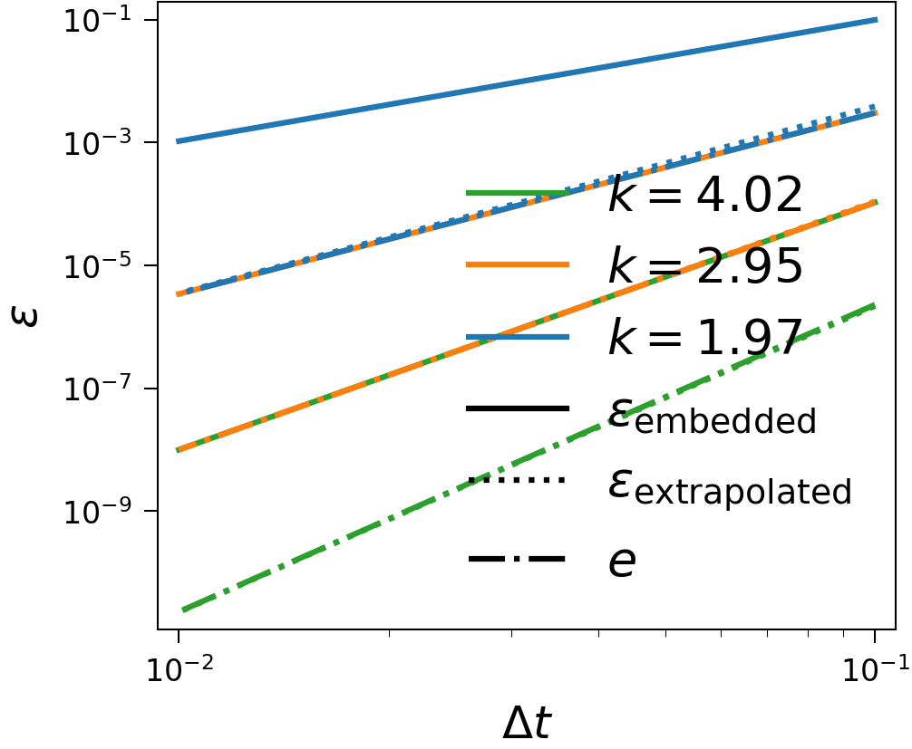
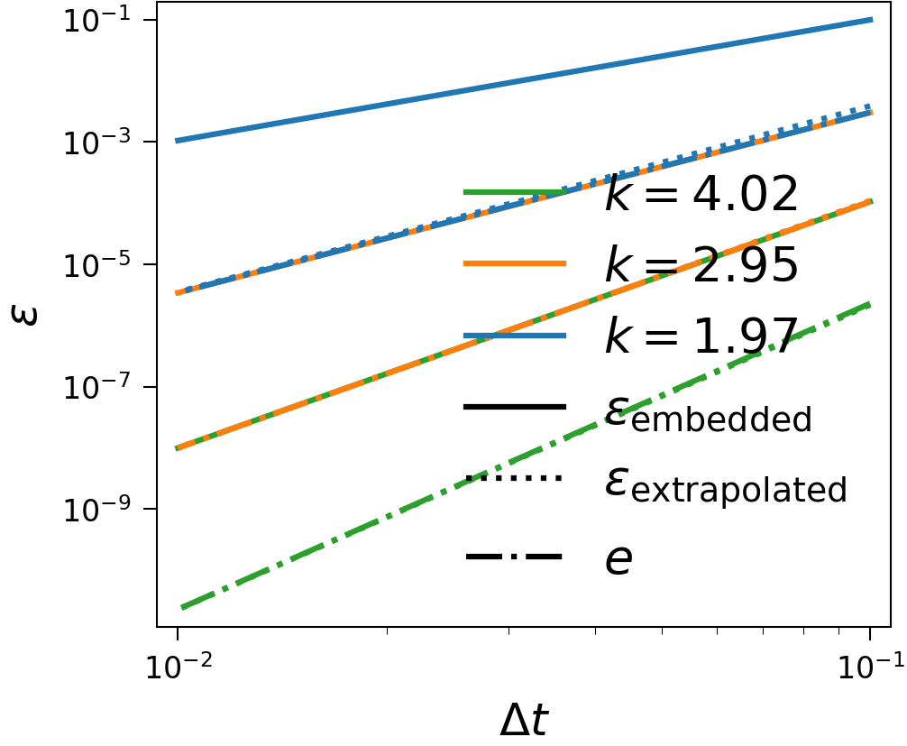
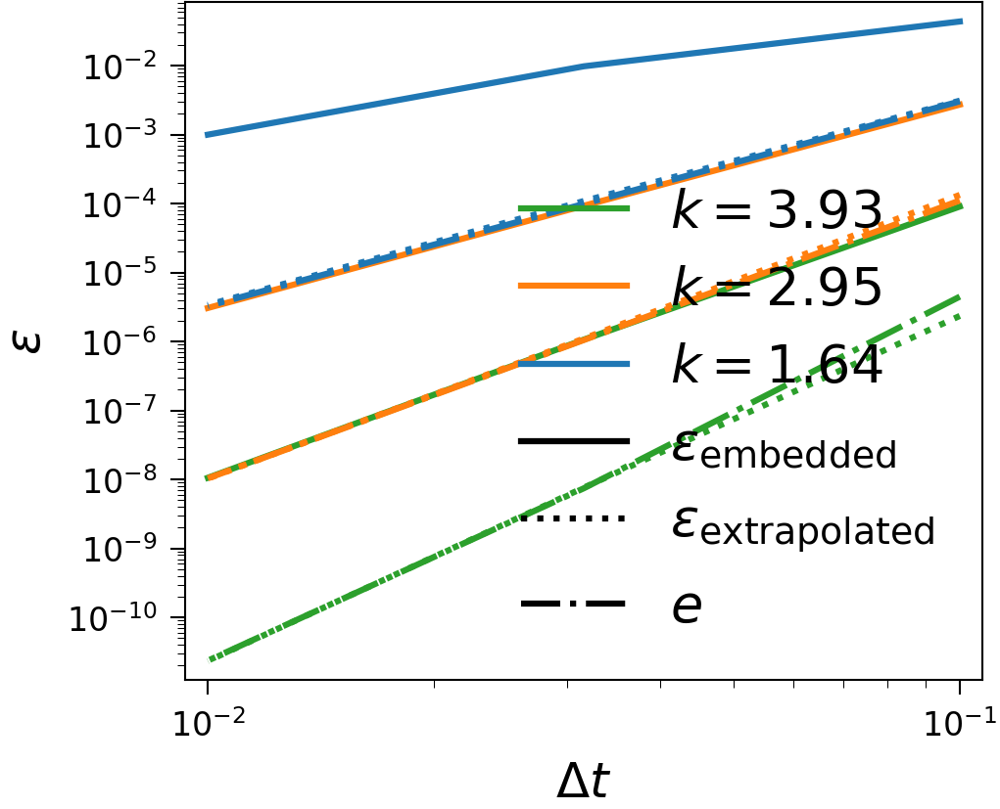
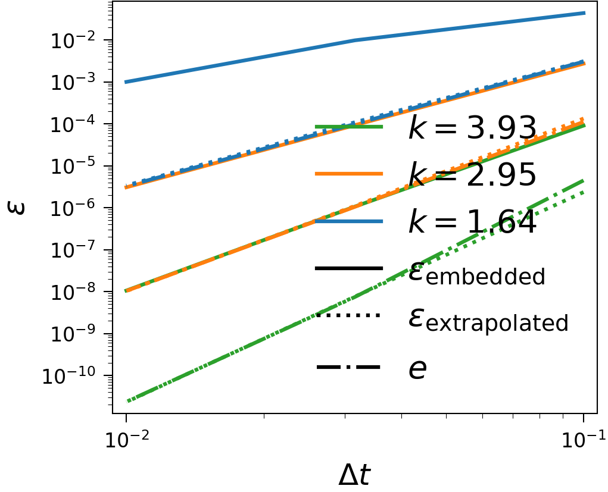

Resilience in SDC¶
In this project, we try a few methods for fixing bitflips in the solution caused by external factors such as radiation. For convenience, we show here plots of tests which are generated by the continuous integration pipeline on github, meaning they are always generated by the latest master branch, while showing explanations in jupyter notebooks, which show only a fixed commit.
The fist strategy we try is Adaptivity, which continually adjusts the step size during run-time and comes with resilience as a by product.
The second strategy is Hot Rod, which is designed purely as a detector for soft faults.
We have also simulated faults and tried recovering them with the strategies here.
Tests¶
Please refer to the above mentioned notebooks for thorough descriptions of what you are seeing here. These plots are duplicates of what you can find there, but generated with the latest master branch.
The Piline equation models an electrical start-up process and is a system of ordinary differential equations, that shows some slowing down of the time scale and is hence a good test to check adaptivity with. See below for, in the order of mention, plots of the solution, the error estimates with difference for Hot Rod and time step with adaptivity enabled and the same with fixed time step and the order of the error estimates with different numbers of sweeps. The last plot was made without Hot Rod, meaning the last sweep is taken to be the solution of the time step, making it one order higher than the embedded estimate, and it can be seen that the extrapolation error estimate lies on top of the embedded error estimate with one fewer sweep. These plots were generated with serial SDC.


 

{kind=link}
We also have an implementation for Block Gauss-Seidel multi-step SDC in a simulated parallelism version without MPI. You can see the results below, except for the solution, which looks the same as the serial solution to the naked eye.

 

{kind=link}